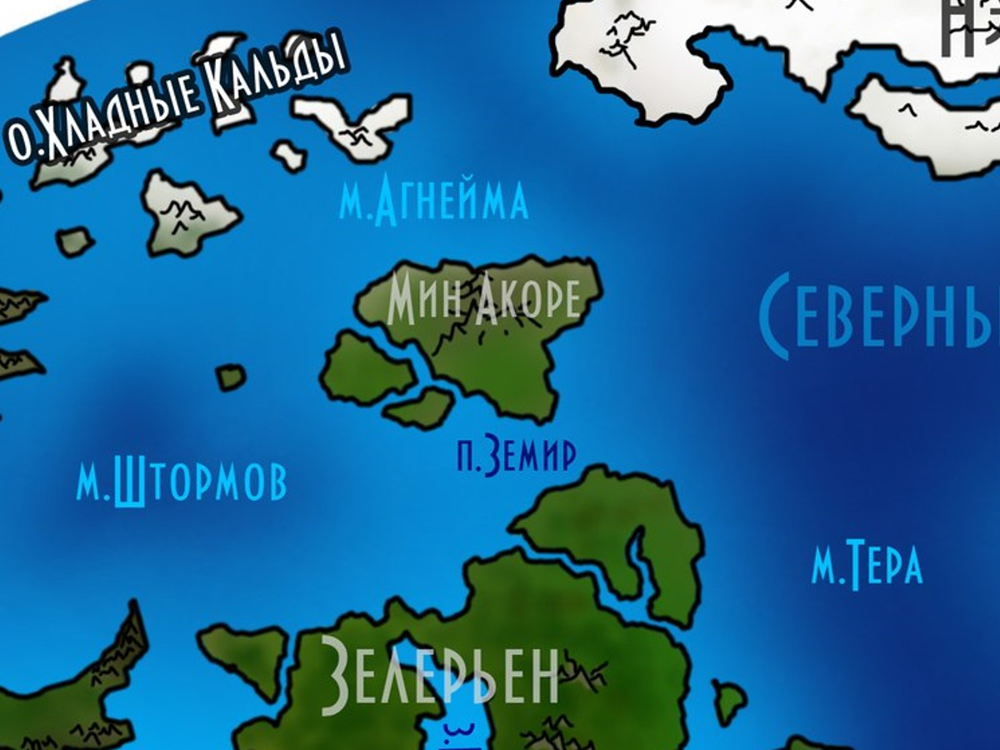
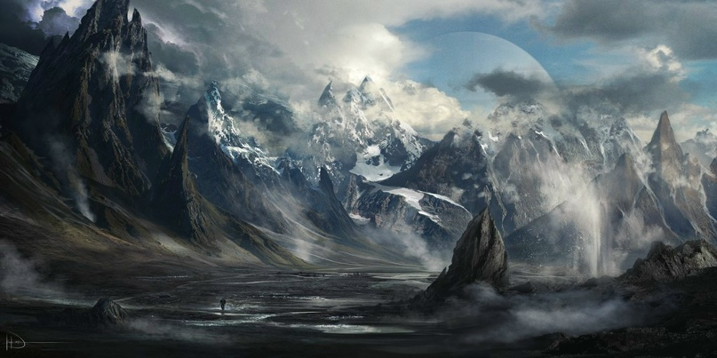

Мин Акоре
Мин Акоре — суровый северный остров, чьи земли покрыты тайгой, а недра богаты рудами. Здесь живут орки, люди и эльфы, и их отношения далеки от мира: орки помнят века вражды, люди строят города-государства, а эльфы объединились в Кеольскую Коалицию.
Карта Мин Акоре
Суровый север, тайга и горы

Составлена по рассказам тангар, орков и эльфов. Там, где линии расходятся с землёй, — верьте земле.
Водные ресурсы
Водные ресурсы на этом острове сами по себе очень хороши благодаря снегам. Белое одеяло покрывает землю большую часть времени года, но когда наступает лето, оно тает. Поэтому лето больше напоминает осень. Также на Мин Акоре достаточно полноводных рек, некоторые из них не замерзают целый год благодаря бурному течению. Остров не обделён разнообразными озёрами, ручьями и различными источниками.
Полезные ископаемые
Много полезных ископаемых, но их очень тяжело добывать ввиду холодного климата и промёрзшей почвы, что осложняет труд. Люди же вынуждены пользоваться магией, чтобы облегчить себе задачу. Но применить её удаётся не везде: горы, что расположены на наименьшем из островов (Селин Акоре), очень ограничивают её использование, почти не позволяя совершать заклинания, и артефакты, как правило, там бесполезны. Эта особенность сильно осложняет жизнь местного населения.
Климат
По всему континенту среднегодовая температура от 0 °С до −10 °С, а температурные пики — от +35 °С до −60 °С. Остров расположен на севере, поэтому климат достаточно суровый. В основном тут преобладает тайга. Зима холодная. На западной части острова часто бушуют холодные ветра, но в восточной такого нет, поскольку горы защищают большую часть местности и ветер заметно слабее.
Лето не отличается теплотой: температура в это время года обычно не превышает 10–15 °С, но в некоторых районах в отдельные дни наблюдается заметное для этого континента потепление. Длительность лета малая: всего 20 дней (60 дней по реальному времени). Также имеется горный климат — «климатические условия в горных местностях». Чем выше поднимаешься в горы, тем заметнее меняется погода и условия.
Животные и растения
Тут довольно много животных, что нельзя сказать про растительный мир, который уступает животному. Обычно животные обитают в лесах, но также можно встретить некоторые виды и в горах. Люди, орки и тангары обычно убивают их ради шкур, мяса и т. д. Некоторых приручают и разводят для последующего убоя. Стоит упомянуть, что остров имеет свою морозостойкую экосистему, которая вполне может прокормить достаточно большое население.
Население и города
Основное население — это орки, люди и эльфы. Также в людских городах иногда встречаются неклюды, ювары и эльфиниты, а возле гор — маленькие селения тангар, которые занимаются добычей полезных ископаемых, торгуя с другими жителями Мин Акоре.
Орки занимают преимущественно западную часть острова, но их небольшие поселения также встречаются по всему Мин Акоре. Они ненавидят людей, поскольку именно люди уничтожали их расу на протяжении многих веков и отчасти продолжают это дело и сейчас. В нынешнее время на западной части острова Мин Акоре орки снова пытаются объединиться в государство, и некоторые племена заключают союзы, образуя альянсы.
Люди и эльфы — юг, юго-восточную, восточную и северо-восточную части острова. Конфликты здесь довольно редкое явление. Люди живут в городах-государствах, которых немного. Эльфы продолжают жить отдельными поселениями, но уже создали объединение, которое называется Кеольская Коалиция. Леса, в которых они обосновались, хорошо охраняются, и чужаков в них не любят.
История
Этот остров вулканического происхождения и, несмотря на свой малый размер, пережил довольно много. Историю этого острова творили больше орки, чем все остальные расы, что там жили. Многие считали, что здесь и зародилась Великая Империя, которая затем распространилась и по другим островам. Но это, конечно, только догадки.
Затем никаких ярких пятен в истории Мин Акоре совсем не было. Он считается тихим и спокойным островом, многие даже уже начинают забывать о его существовании. Но, конечно, орки, которые продолжают жить на этом острове и считают его своей «столицей», считаются довольно опасными и в большинстве своём одичали, в попытках отрезать себя от остальной половины острова. Их образованность в плане письма, литературы и даже обычного разговора очень низка, но зато сохранились многие традиции и обычаи расы орков, которые они не желают забывать и по сей день.
Достопримечательности и особенности
Горная гряда Тамарин считается одним из самых красивых мест на материке. Многие художники приезжают в этот негостеприимный край ради того, чтобы запечатлеть этот невероятный пейзаж на своих картинах. Ещё более смелые платят местным, чтобы те помогли им подняться в горы — если это удаётся сделать, открывающийся сверху вид на обширные равнины Мин Акоре вдохновляет художников на небывалые пейзажи.

Орочьих городов уже не существует, но редкие развалины, разбросанные по большой территории, могут напомнить о былых временах их величия. Людские же города не отличаются особой архитектурой, лишь изредка там можно найти произведения искусства в виде фонтанов или статуй.
География Мериона · Остров Мин Акоре